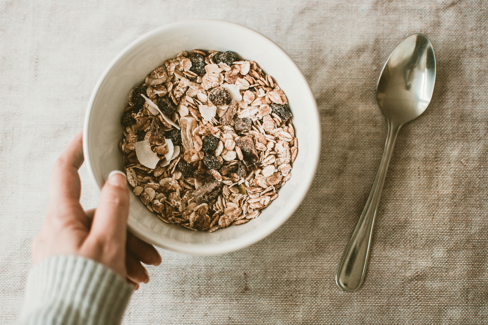

Pumpkin Spice Oats
Home

Photo by Lisa Fotios on StockSnap
Description
Happy (October) pumpkin spice month!
One thing I love about cold weather is that oatmeal becomes my favourite breakfast all over again. I tend to opt for fruit all summer long, but as soon as those leaves start falling, I get a serious hankering for good ol' fashioned oatmeal. And pumpkin spice. So naturally, the two eventually collided in my brain and I was met with: Vegan Pumpkin Spice Oatmeal! Keep reading and I'll show you how I got there..
Ingredients
- 1 cup plant-based milk, plus more for serving
- ⅔ cup large flake rolled oats
- ⅓ cup pumpkin puree, (not pumpkin pie filling)
- ¼ cup dates, , pitted and chopped
- ½ teaspoon vanilla extract
- ½ teaspoon pumpkin pie spice
- 1 tablespoon maple syrup, (optional)
- A handful of pecans, (optional)
Steps
- Add everything except for the maple syrup and pecans to a pot and put over medium heat. Stir and cook for about 5 minutes until the oatmeal has thickened and most of the liquid is absorbed.
- You can enjoy as is, or splash on a little extra plant-based milk, a drizzle of maple syrup, and a sprinkle of pecans. Bon appetegan!
Recipe credit: ItDoesntTasteLikeChicken.com